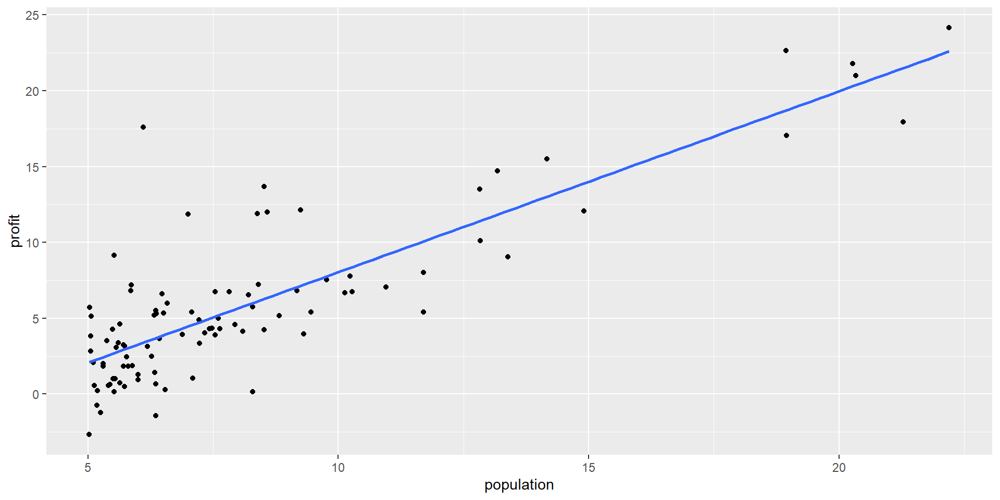

library(tidyverse)
library(knitr)
library(readODS)MAT-427: Multiple Linear Regression + Data Splitting
Computational Setup
Question!!!
As a model’s flexibility increases:
- its variance (increases/decreases)
- its bias (increases/decreases)
- its training MSE (increases/decreases)
- its test MSE (describe)
- its variance (increases)
- its bias (decreases)
- its training MSE (decreases)
- its test MSE (decreases at first, then increases and the model starts to overfit, U-shaped)
Modeling in R
Outlet Data
Suppose the CEO of a restaurant franchise is considering opening new outlets in different cities. They would like to expand their business to cities that give them higher profits with the assumption that highly populated cities will probably yield higher profits.
They have data on the population (in 100,000) and profit (in $1,000) at 97 cities where they currently have outlets.
outlets <- readRDS("../data/outlets.rds") # load dataset
head(outlets) |> kable() # first six observations of the dataset| population | profit |
|---|---|
| 6.1101 | 17.5920 |
| 5.5277 | 9.1302 |
| 8.5186 | 13.6620 |
| 7.0032 | 11.8540 |
| 5.8598 | 6.8233 |
| 8.3829 | 11.8860 |
R as an open-source language
- R is an open source language
- Advantages:
- Packages for almost anything you want
- “Cutting edge” methods rolled out quickly and early
- Disadvantages
- Many packages (especially new ones) may have bugs
- Lots of syntactical diversity
- Syntax is frequently dependent on the needs of the person who wrote the package and conventions at the time the package was created
- Advantages:
Enter tidyverse
The tidyverse is an opinionated collection of R packages designed for data science. All packages share an underlying design philosophy, grammar, and data structures.
tidyverseis for manipulating and visualizing data- the
tidyverseis a meta-package meaning it is a collection of a bunch of other packages
Enter tidymodels
The tidymodels framework is a collection of packages for modeling and machine learning using tidyverse principles.
tidymodelscreates a unified framework for building models in R- Eric’s opinion: similar idea to
scikit-learnin Python
Back to linear regression
ggplot(data = outlets) +
geom_point(mapping = aes(x = population, y = profit)) + # create scatterplot
geom_smooth(mapping = aes(x = population, y = profit),
method = "lm", se = FALSE) # add the regression line
Classic Linear Regression in R
outlets_model <- lm(profit ~ population, data = outlets)
outlets_model
Call:
lm(formula = profit ~ population, data = outlets)
Coefficients:
(Intercept) population
-3.896 1.193 This corresponds to the model:
\[ \begin{aligned} \text{Profit} &= -3.90 + 1.19\times\text{Population}\\ \hat{Y}_i &= -3.90 + 1.19X_i \end{aligned} \] i.e. \(\hat{\beta}_0 = -3.90\) and \(\hat{\beta}_1 = 1.19\)
Modeling with tidymodels
Specify mathematical structure of model (e.g. linear regression, logistic regression)
Specify the engine for fitting the model. (e.g.
lm,stan,glmnet).When required, declare the mode of the model (i.e. regression or classification).
Linear Regression with tidymodels
# Usually put these at the top
library(tidymodels) # load tidymodels package
tidymodels_prefer() # avoid common conflicts
lm_model <- linear_reg() |> # Step 1
set_engine("lm") # Step 2
# Step 3 not required since linear regression can't be used for classification
# Fit the model
lm_model_fit <- lm_model |>
fit(profit ~ population, data = outlets)Linear Regression with tidymodels
lm_model_fit |>
tidy() |>
kable()| term | estimate | std.error | statistic | p.value |
|---|---|---|---|---|
| (Intercept) | -3.895781 | 0.7194828 | -5.414696 | 5e-07 |
| population | 1.193034 | 0.0797439 | 14.960806 | 0e+00 |
Same model as before:
\[ \begin{aligned} \text{Profit} &= -3.90 + 1.19\times\text{Population}\\ \hat{Y}_i &= -3.90 + 1.19X_i \end{aligned} \]
Linear Regression in R: Prediction
new_cities <- tibble(population = rnorm(100, 7, 3))
lm_model_fit |>
predict(new_data = new_cities) |>
kable()| .pred |
|---|
| 4.2987846 |
| 4.3494028 |
| 1.6358812 |
| 2.8371943 |
| 8.6964415 |
| 1.2610114 |
| 4.4093826 |
| 7.0132467 |
| 8.9081681 |
| -3.7261162 |
| -0.3152552 |
| -0.0578742 |
| 3.1103344 |
| -1.4511631 |
| 3.2056127 |
| 7.2094157 |
| 5.2694317 |
| 9.8741950 |
| 5.3986612 |
| 5.7894116 |
| 6.5817409 |
| 6.4489003 |
| 1.5635853 |
| -5.8145557 |
| 0.3096059 |
| 4.7217335 |
| 8.0782299 |
| 6.4065191 |
| 7.0495725 |
| 10.5119132 |
| 3.2281542 |
| 5.3756384 |
| 10.5424872 |
| 2.6444235 |
| 3.1483294 |
| 5.7659904 |
| 3.3551593 |
| -1.1774409 |
| 9.5361487 |
| -0.3336581 |
| 4.1063193 |
| 2.7105932 |
| 6.1253040 |
| 3.6662178 |
| 6.1309169 |
| 9.2088409 |
| -2.1660582 |
| 4.9800410 |
| 5.5140171 |
| 3.3714057 |
| 5.0758817 |
| 2.9767839 |
| 4.4891785 |
| -2.2982990 |
| -2.0242922 |
| 4.4403419 |
| 4.0335077 |
| 6.8410161 |
| 3.6835670 |
| -0.6670421 |
| 6.1270222 |
| 7.1611647 |
| 3.2563676 |
| 11.3135720 |
| -0.8720586 |
| 7.4979481 |
| 5.4139803 |
| 7.3006650 |
| 3.3803037 |
| 5.1760916 |
| 4.7255493 |
| 5.3377241 |
| 8.0237716 |
| 5.0616701 |
| -1.7427836 |
| 5.5563838 |
| 9.1823534 |
| 3.3094120 |
| 4.7223157 |
| 3.3083360 |
| 4.0882384 |
| -0.3834378 |
| 0.9586050 |
| 6.1677633 |
| -0.9134436 |
| 6.9813206 |
| -1.8743103 |
| 10.6155073 |
| 1.7708313 |
| 10.9242269 |
| 4.7897426 |
| 5.2228631 |
| 5.1455980 |
| -0.9701960 |
| 5.7970445 |
| 0.3254730 |
| 1.5828592 |
| -1.7630027 |
| -3.9350027 |
| 8.2198551 |
new_cities <- tibble(population = rnorm(100, 7, 3))
new_cities <- new_cities |>
bind_cols(predict(lm_model_fit, new_data = new_cities, type = "pred_int")) |>
kable()Note: New data must be a data frame with the same columns names as the training data
Multiple Linear Regression
Multiple Linear Regression
- Response: \(Y\)
- Predictor Variables: \(X_1, X_2, \ldots, X_p\)
- Assume true relationship:
\[ \begin{aligned} Y&=f(\mathbf{X}) + \epsilon\\ &=\beta_0 + \beta_1 X_1 + \beta_2 X_2 + \ldots + \beta_p X_p + \epsilon \end{aligned} \] where \(\beta_j\) quantifies the association between the \(j^{th}\) predictor and the response.
Multiple Linear Regression: Estimating Parameters
- Suppose \(\hat{\beta}_0, \hat{\beta}_1, \ldots, \hat{\beta}_p\) are estimates of \(\beta_0, \beta_1, \ldots, \beta_p\)
- Training Data:
- Observed response: \(y_i\) for \(i=1,\ldots,n\)
- Observed predictors: \(x_{1i}, x_{2i}, \ldots x_{pi}\) for \(i=1,\ldots, n\)
- Predicted response: \[\hat{y}_i = \hat{\beta}_0 + \hat{\beta}_1x_{1i} + \ldots + \hat{\beta}_px_{pi} \text{ for } i=1, \ldots, n\]
- Residuals: \(e_i = \hat{y}_i - y_i\) for \(i=1, \ldots, n\)
- Mean Squared Error (MSE): \(MSE =\dfrac{e^2_1+e^2_2+\ldots+e^2_n}{n}\)
Multiple Linear Regression: Estimating Parameters
- Goal: Use training data to find \(\hat{\beta}_0, \hat{\beta}_1, \ldots, \hat{\beta}_p\) that minimizes MSE
- \(\hat{\beta}_i\)’s called least-squares estimators
- Since minimizing MSE \(\implies\) MSE is called cost/loss function
- Can use calculus or gradient descent to find \(\hat{\beta}_i\)’s
House Prices dataset
sizeis in square feetnum_bedroomsis a countpriceis in $1,000’s
house_prices <- readRDS("../data/house_prices.rds") # load dataset
head(house_prices, 6) |> kable() # print first 6 observations| size | num_bedrooms | price |
|---|---|---|
| 2104 | 3 | 399.9 |
| 1600 | 3 | 329.9 |
| 2400 | 3 | 369.0 |
| 1416 | 2 | 232.0 |
| 3000 | 4 | 539.9 |
| 1985 | 4 | 299.9 |
Multiple Linear Regression
Some Exploratory Data Analysis (EDA)
library(GGally)
ggpairs(data = house_prices) # correlation plot
Multiple Linear Regression in R
mlr_model <- linear_reg() |>
set_engine("lm")
house_price_mlr <- mlr_model |>
fit(price ~ size + num_bedrooms, data = house_prices) # fit the model
house_price_mlr |>
tidy() |> # produce result summaries of the model
kable()| term | estimate | std.error | statistic | p.value |
|---|---|---|---|---|
| (Intercept) | 89.5977660 | 41.7674230 | 2.1451591 | 0.0374991 |
| size | 0.1392106 | 0.0147951 | 9.4092391 | 0.0000000 |
| num_bedrooms | -8.7379154 | 15.4506975 | -0.5655353 | 0.5745825 |
Multiple Linear Regression: Interpreting Parameters
- \(\hat{\beta}_0=89.5978\): The intercept \(\implies\) a house with 0 square feet and 0 bedrooms would cost approximately $89,598.80. Is this meaningful in context? Not really
- \(\hat{\beta}_1=0.1392\): With
num_bedroomsremaining fixed, an additional 1 square foot ofsizeleads to an increase inpriceby approximately $139.20. - \(\hat{\beta}_2=-8.7379\): With
sizeremaining fixed, an additional bedroom leads to an decrease inpriceof approximately $8,737.90.
. . .
- Hmm…. that’s a little weird…
- Simpson’s Paradox: when relationship between two variables disappears or reverses when controlling for a third, confounding variable
Multiple Linear Regression: Interpreting Parameters
- Write down our model in mathematical notation
- \(\text{price} = 89.5978 + 0.1392\times\text{size} - 8.7379\times\text{num_bedrooms}\)
- \(Y = 89.5978 + 0.1392X_1 - 8.7379X_2\)
Multiple Linear Regression: Prediction
- Prediction of
pricewhensizeis 2000 square feet for a house with 3 bedrooms - \(\text{sales} = 89.5978 + 0.1392\times2000 - 8.7379\times3 = 341.7841\)
. . .
predict(house_price_mlr, new_data = tibble(size = 2000, num_bedrooms = 3)) # obtain prediction# A tibble: 1 × 1
.pred
<dbl>
1 342.- Why don’t these match exactly? rounding
Linear Regression: Comparing Models
- Many methods for comparing regression models from your regression course
- Today: Data splitting
- First: New Data
- ames housing data
- Many variables
- Focus on:
Sale_Price: in dollarsGr_Liv_Area: size in square feetBedroom_AbvGr: number of bedrooms above grade